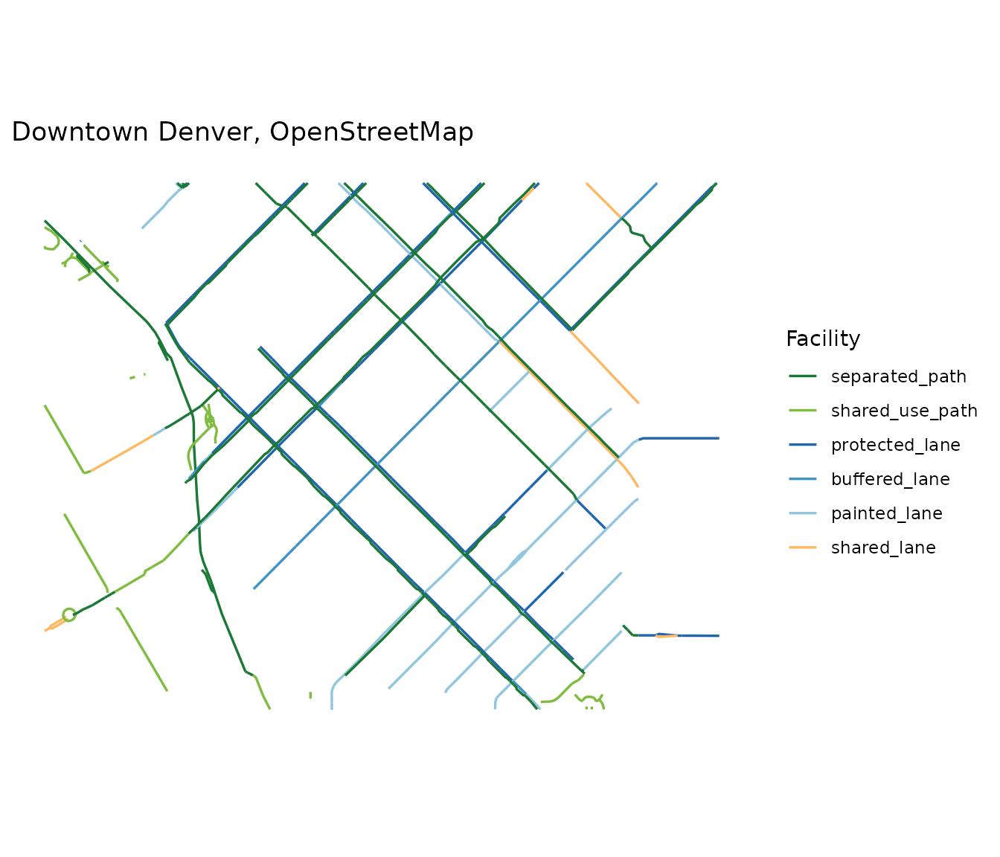
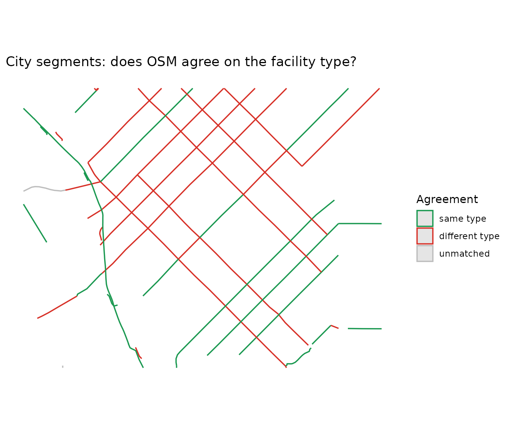

This walk-through uses denver_lodo, a frozen sample of
both data sources for a small box over downtown Denver, so it runs
without network access. The last section shows the same calls at city
scale.
1. Classify the OpenStreetMap ways
denver_lodo$osm is exactly what
cl_fetch_osm() returns: one row per way with whatever OSM
tags exist in the area, unclassified.
nrow(denver_lodo$osm)
#> [1] 473
head(names(denver_lodo$osm), 20)
#> [1] "osm_id" "name" "bicycle"
#> [4] "bridge" "bus" "bus:lanes"
#> [7] "bus:lanes:forward" "busway:right" "change:lanes"
#> [10] "covered" "crossing" "crossing:island"
#> [13] "crossing:markings" "crossing:signals" "cycleway"
#> [16] "cycleway:both" "cycleway:both:buffer" "cycleway:left"
#> [19] "cycleway:right" "cycleway:right:buffer"cl_classify() turns the tagging into the package
taxonomy, resolving cycleway:left /
cycleway:right per side and keeping the more protected side
as facility_type. Ways that carry a bicycle tag but are not
a facility (a sidewalk with bicycle=designated, a road with
cycleway=no) are dropped with
drop_none = TRUE.
lanes <- cl_classify(denver_lodo$osm, drop_none = TRUE)
knitr::kable(cl_summary(lanes), digits = 2)| facility_type | n_segments | length_km | length_mi | share |
|---|---|---|---|---|
| separated_path | 142 | 11.22 | 6.97 | 0.41 |
| shared_use_path | 53 | 2.29 | 1.42 | 0.08 |
| protected_lane | 110 | 6.97 | 4.33 | 0.25 |
| buffered_lane | 18 | 1.69 | 1.05 | 0.06 |
| painted_lane | 66 | 4.07 | 2.53 | 0.15 |
| shared_lane | 24 | 1.30 | 0.81 | 0.05 |
cl_plot(lanes, title = "Downtown Denver, OpenStreetMap")
2. The city’s inventory through the same taxonomy
denver_lodo$official is the same box from Denver’s
Denver Moves: Bikes 2025 layer, already crosswalked into the
taxonomy. The city’s own class is kept in official_class,
and status says whether a segment is built as recorded or
has upgrades planned.
knitr::kable(cl_summary(denver_lodo$official, by = c("facility_type", "status")), digits = 2)| facility_type | status | n_segments | length_km | length_mi | share |
|---|---|---|---|---|---|
| separated_path | Existing Bikeway | 7 | 1.79 | 1.11 | 0.10 |
| shared_use_path | Existing Bikeway | 8 | 1.11 | 0.69 | 0.06 |
| protected_lane | Existing Bikeway | 5 | 3.17 | 1.97 | 0.18 |
| protected_lane | Existing Bikeway with Facility Type Changes | 1 | 0.01 | 0.01 | 0.00 |
| protected_lane | Existing Bikeway with Future Upgrades | 15 | 7.55 | 4.69 | 0.42 |
| protected_lane | Future Bikeway | 1 | 0.29 | 0.18 | 0.02 |
| buffered_lane | Existing Bikeway with Facility Type Changes | 4 | 0.97 | 0.60 | 0.05 |
| painted_lane | Existing Bikeway | 1 | 0.13 | 0.08 | 0.01 |
| painted_lane | Existing Bikeway with Facility Type Changes | 13 | 2.84 | 1.77 | 0.16 |
3. How well do they agree?
cl_compare() measures two things. Spatially: what share
of each layer lies within tolerance metres of the other.
And by type: for every matched segment, which facility type the other
layer assigns to it.
cmp <- cl_compare(lanes, denver_lodo$official, tolerance = 15)
cmp
#> <cl_comparison> tolerance = 15 m
#>
#> layer n_segments length_km matched_km matched_frac type_agreement
#> osm 413 27.5 25.0 0.908 0.506
#> official 55 17.9 16.6 0.927 0.399
#> type_adjacent
#> 0.558
#> 0.462
#>
#> By facility type:
#> layer facility_type n_segments length_km matched_frac type_agreement
#> osm separated_path 142 11.2 0.993 0.139
#> osm shared_use_path 53 2.3 0.506 0.458
#> osm protected_lane 110 7.0 0.998 0.996
#> osm buffered_lane 18 1.7 0.976 0.676
#> osm painted_lane 66 4.1 0.861 0.722
#> osm shared_lane 24 1.3 0.473 0.000
#> official separated_path 7 1.8 0.998 0.896
#> official shared_use_path 8 1.1 0.665 0.727
#> official protected_lane 22 11.0 0.919 0.101
#> official buffered_lane 4 1.0 1.000 1.000
#> official painted_lane 14 3.0 0.987 0.845
#> type_adjacent
#> 0.149
#> 1.000
#> 1.000
#> 1.000
#> 0.727
#> 0.000
#> 1.000
#> 1.000
#> 0.122
#> 1.000
#> 0.995
#>
#> Official type (rows) vs OSM type (columns), km:
#> osm
#> official separated_path shared_use_path protected_lane buffered_lane
#> separated_path 1.6 0.2 0.0 0.0
#> shared_use_path 0.4 0.5 0.0 0.0
#> protected_lane 9.4 0.2 1.4 0.0
#> buffered_lane 0.0 0.0 0.0 1.0
#> painted_lane 0.0 0.0 0.0 0.4
#> osm
#> official painted_lane unmatched
#> separated_path 0.0 0.0
#> shared_use_path 0.0 0.2
#> protected_lane 0.0 0.0
#> buffered_lane 0.0 0.0
#> painted_lane 2.5 0.0The confusion matrix is where the story is. Rows are the city’s type, columns are what OSM calls the same ground, in kilometres.
round(cmp$confusion, 1)
#> osm
#> official separated_path shared_use_path protected_lane buffered_lane
#> separated_path 1.6 0.2 0.0 0.0
#> shared_use_path 0.4 0.5 0.0 0.0
#> protected_lane 9.4 0.2 1.4 0.0
#> buffered_lane 0.0 0.0 0.0 1.0
#> painted_lane 0.0 0.0 0.0 0.4
#> osm
#> official painted_lane unmatched
#> separated_path 0.0 0.0
#> shared_use_path 0.0 0.2
#> protected_lane 0.0 0.0
#> buffered_lane 0.0 0.0
#> painted_lane 2.5 0.0Downtown, both sources agree almost everywhere that
something exists, but they disagree on what for about
half the length. The largest cell off the diagonal is usually the city’s
protected lanes that OSM mappers tagged as plain
cycleway=lane, which is worth knowing before quoting either
source’s protected-lane mileage.
cl_plot(cmp$official, colour = "type_match",
title = "City segments: does OSM agree on the facility type?")
Segments the city has and OSM lacks entirely are the ones with a low matched fraction:
gaps <- cmp$official[cmp$official$matched_frac < 0.5, ]
nrow(gaps)
#> [1] 6
knitr::kable(sf::st_drop_geometry(gaps)[, c("name", "official_class", "status")])| name | official_class | status | |
|---|---|---|---|
| 5 | Larimer Square | Car-Free Street | Existing Bikeway |
| 34 | Larimer St | Protected Bike Lane | Future Bikeway |
| 38 | Larimer St | Protected Bike Lane | Existing Bikeway with Future Upgrades |
| 41 | Market St | Protected Bike Lane | Existing Bikeway with Future Upgrades |
| 46 | N Mariposa St | Bike Lane | Existing Bikeway with Facility Type Changes |
| 48 | Auraria Pkwy | Shared Sidewalk | Existing Bikeway |
4. The same thing at city scale
Everything above works on a whole city; it just needs the network. A place name is geocoded, the Overpass box is clipped to the city’s administrative boundary so Lakewood and Aurora do not leak in, and the official layer is cut to the same polygon.
denver <- cl_bike_lanes("Denver, Colorado", cache = TRUE)
official <- cl_fetch_official("denver", bbox = attr(denver, "cl_boundary"))
cl_compare(denver, official)Two things to keep in mind at that scale:
-
Overpass is a shared public server. It rate-limits
by address and refuses long queries when busy.
cl_bike_lanes()retries with backoff,tile = 0.12splits a city into small queries that pass more easily, andcache = TRUEmeans a re-run of the script never touches the server. -
shared_use_pathis where OSM is generous. Park footways taggedbicycle=designatedcount;strict = TRUEdrops the ones with no paved surface tag when you want on-road-quality kilometres.